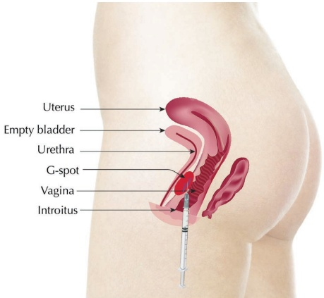
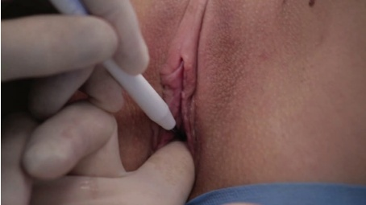
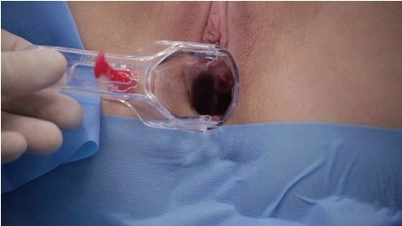
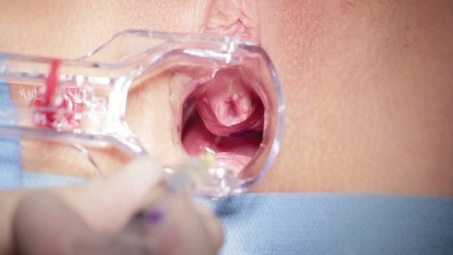
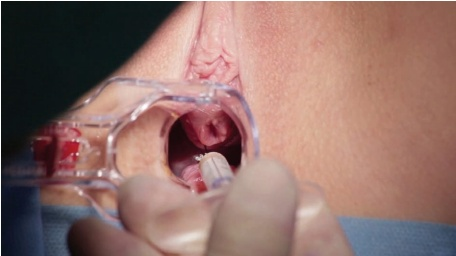

40 私密区域：G点丰容
私密区域G点增生
JANI VAN LOGHEM
40.1 引言
关于阴道前壁内存在外源性区域的记载可以追溯到古代文献，例如《印度生殖瑜伽经》中的一首七世纪诗歌，该诗歌后来在20世纪50年代被称为Gräfenberg点（或G点）。支持G点存在的证据仍然存在争议[1,2]，但研究表明尿道阴道间隙（阴道与尿道之间的空间）的厚度与通过阴道刺激达到高潮的能力呈直接相关性，这最可能是指内部阴蒂[3]。事实上，该区域的体积代表了上述高潮的一个有利因素，因为能够达到内部阴蒂高潮的女性在该区域具有更高的长度和体积[4]。Battaglia等人还提出了血清雄激素水平和上次性交时间对该解剖结构体积的影响[4]。此外，其他报告还显示了HA注射在该区域提高性感觉的有效性[5]。
在本章中，我们介绍了一种使用羟基磷灰石钙（CaHA）增加G点区域体积的技术。由于这是一种尚未获得监管批准的手术，我们建议医生除了知情同意书和病史问卷外，还应包含如验证女性性功能指数（FSFI）问卷[6]等额外的文件。我们还建议在手术前、中、后始终有助理人员在场。该手术的禁忌症包括妊娠、妇科或精神疾病、性功能障碍（指女性性反应周期：唤醒期、平台期、高潮期、消退期的问题）、情绪/心理问题或性传播疾病。
40.2 解剖学危险区域
解剖学危险区域包括阴道动脉、子宫动脉和阴道静脉丛。
必须小心避免注射大体积的填充剂，因为有报道称在静脉血管内注射会导致肺栓塞[7]。推荐的最大剂量为沿逆行线性通道注射0.1 mL。
40.3 G点增生锐针技术
有关注射定位，参见图40.1。
40.3.1 分步技术
-
患者应排空膀胱。
-
将患者置于妇科检查椅上。
-
请患者用手指确定G点（它应该位于阴道口约5厘米处）。
-
在其指头上标记阴道口的点，并测量到指尖的距离。这就是从阴道口到G点的距离（图40.2）。
-
当患者不知道自己G点位置时，将一只戴手套的手指伸入阴道，然后沿着前壁向下移动食指。
-
请患者在感到尿意时指示“是”。用记号笔在手套上标记手指位于阴道口的点，并测量到指尖的距离。这就是从阴道口到G点的距离。对于剩余那些在数字刺激下没有感到排尿冲动的患者，可假设距离为5厘米。



-
如果可行，可进行阴道超声测量尿道阴道间隙（前阴壁与尿道之间的距离）的 G 点部位（从而测量从外阴口测得的距离）。此测量值可与治疗后的测量值进行比较。
-
将（润滑的）阴道窥器置入阴道。不要旋转，因为前壁需要保持可及以便注射，并固定窥器处于张开状态（图 40.3）。
-
用带有外阴口标记的戴手套的手指进入。按压前阴壁，并询问患者该位置是否确实是正确的位置。用记号笔在粘膜上标记 G 点的位置。
-
使用不含酒精的聚维酮碘（chlorhexidine）进行消毒，以防止刺激。
-
可选地，局部外用利多卡因凝胶进行皮面麻醉 5 分钟。
-
向 G 点注射 1 mL 1% 利多卡因与肾上腺素 1:200000（用碳酸氢钠中和）的混合液。非常缓慢地注射以防止疼痛（图 40.4）。
-
使用 25–27G 针头、20 mm 套管针，并略微弯曲以便于注射。

- 使用扇形技术，用 0.05–0.1 mL 的线性丝，缓慢注射 0.5–1 mL 标准稀释的羟基磷灰石钙（CaHA）（每 1.5 mL CaHA 注射器中含 0.3 mL 利多卡因）到黏膜下间隙。

并在标记区域的中线方向进行缓慢的逆行移动（图 40.5）。
-
确保严格保持在黏膜下，以避免损伤尿道和膀胱。
-
注射后，可进行第二次阴道超声测量，以检查尿道阴道厚度的增加情况。
-
在阴道内放置棉塞，并指导患者将其留置，并禁忌性生活至少四小时。
40.4 术后护理
要求患者一个月后回访复查，并再次填写 FSFI 問卷。手术的结果可以通过 FSFI 問卷中包含的钥匙进行客观化评估。对于性感觉无改善的患者可给予修补治疗。
参考文献
[1] T. M. Hines, “The G-spot: A modern gynecologic myth,” Am J Obstet Gynecol, vol. 185, no. 2, pp. 359–362, 2001.
[2] V. Puppo, G. Puppo, “Anatomy of sex: Revision of the new anatomical terms used for the clitoris and the female orgasm by sexologists,” Clin Anat, vol. 28, no. 3, pp. 293–304, 2015.
[3] G. L. Gravina et al., “Measurement of the thickness of the urethrovaginal space in women with or without vaginal orgasm,” J Sex Med, vol. 5, no. 3, pp. 610–618, 2008.
[4] C. Battaglia et al., “3-D volumetric and vascular analysis of the urethrovaginal space in young women with or without vaginal orgasm,” J Sex Med, vol. 7, no. 4, pp. 1445–1453, 2010.
[5] A. Moore et al., “Proceedings of the world meeting on sexual medicine, Chicago, USA, August 26–30 2012,” J Sex Med, vol. 9, no. Suppl 4, pp. 183–298, 2012.
[6] R. Rosen et al., “The Female Sexual Function Index (FSFI): A multidimensional self-report instrument for the assessment of female sexual function,” J Sex Marital Ther, vol. 26, no. 2, pp. 191–205, 2000.
[7] H. J. Park et al., “Hyaluronic acid pulmonary embolism: A critical consequence of an illegal cosmetic vaginal procedure,” Thorax, vol. 65, no. 4, pp. 360–361, 2010.